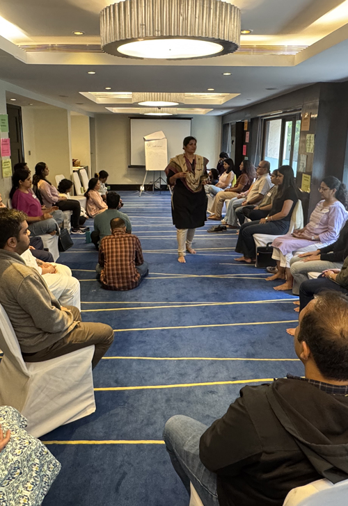
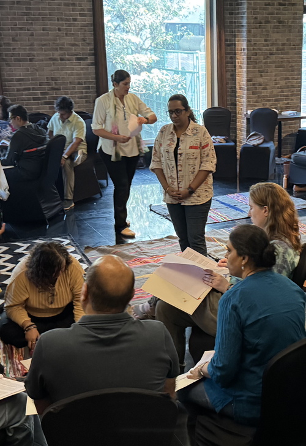
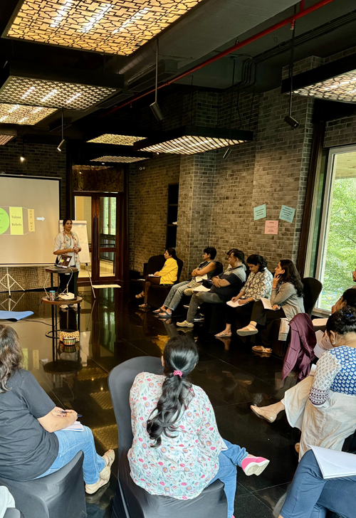
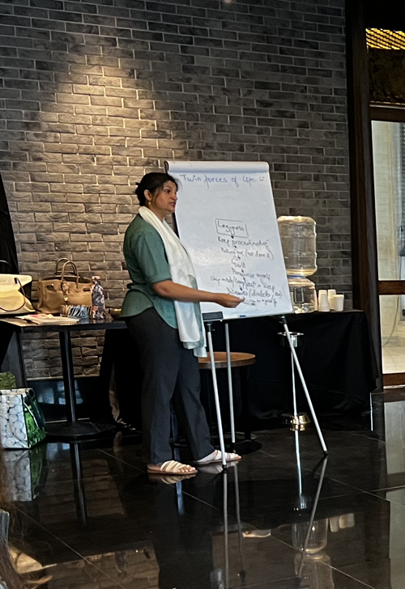

Neuro Lingustic Programming (NLP) as the name signifies, encompasses the main pillars which are instrumental in creating a human experience; Neurology, Language and Programming.




Neuro Linguistic Programming (NLP) as the name signifies, encompasses the main pillars instrumental in creating a human experience, which are- Neurology, Language and Programming. Our neurological structure controls how our bodies function, our language governs how we interact and communicate with people around us, and programming defines how we create models of the world. NLP, is thus pivotal in understanding the dynamics between our mind, the language patterns we use and how the interplay between these entities has a bearing on our behaviour.
NLP techniques can help you:
- Gain insights into human behaviour
- Achieve your personal health and athletic goals
- Understand why you do what you do
- Acquire tools and skills for achieving personal excellence
- Explore and apply tools for effective negotiations
- Overcome limiting beliefs and realise your potential
- Overcome fears and phobias
- Get rid of past mental baggage
- Improve your sensory acuity for a heightened awareness of yourself your surroundings
- Design your own destiny
After conducting these workshops under an American certifying body for the last 20 years, we are now choosing to curate and deliver NLP workshops under the umbrella of Earthwise. The aim is to design content that is true to our cultural roots, and which celebrates the work of the founders of NLP, along with numerous other scientists and researchers in this field of human excellence. The intention is also to make NLP accessible to more people, so that they are empowered to change their own lives.